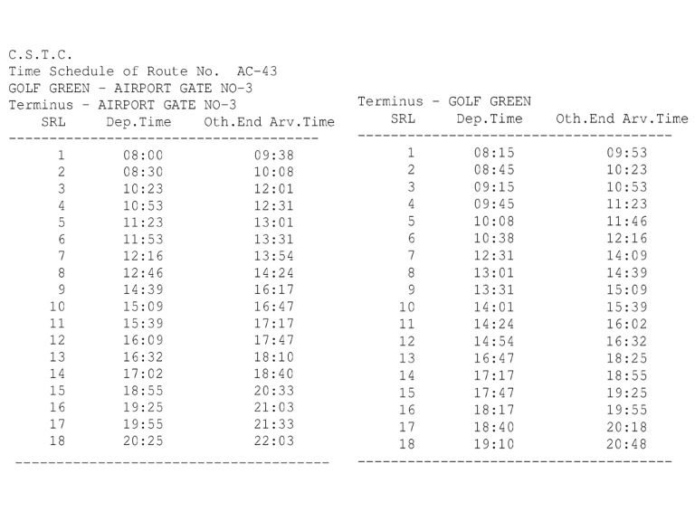

AC-43 Kolkata City Bus Timetable
AIRPORT GATE NO-3 → GOLF GREEN and reverse direction departure and terminal arrival times.
Departures 36First 8:00 AMLast 7:10 PMDirections 2
AIRPORT GATE NO-3 GOLF GREEN
| # | Departure | Arrival | Ride |
|---|---|---|---|
| 1 | 8:00 AM | 9:38 AM | 1h 38m |
| 2 | 8:30 AM | 10:08 AM | 1h 38m |
| 3 | 10:23 AM | 12:01 PM | 1h 38m |
| 4 | 10:53 AM | 12:31 PM | 1h 38m |
| 5 | 11:23 AM | 1:01 PM | 1h 38m |
| 6 | 11:53 AM | 1:31 PM | 1h 38m |
| 7 | 12:16 PM | 1:54 PM | 1h 38m |
| 8 | 12:46 PM | 2:24 PM | 1h 38m |
| 9 | 2:39 PM | 4:17 PM | 1h 38m |
| 10 | 3:09 PM | 4:47 PM | 1h 38m |
| 11 | 3:39 PM | 5:17 PM | 1h 38m |
| 12 | 4:09 PM | 5:47 PM | 1h 38m |
| 13 | 4:32 PM | 6:10 PM | 1h 38m |
| 14 | 5:02 PM | 6:40 PM | 1h 38m |
| 15 | 6:55 PM | 8:33 PM | 1h 38m |
| 16 | 7:25 PM | 9:03 PM | 1h 38m |
| 17 | 7:55 PM | 9:33 PM | 1h 38m |
| 18 | 8:25 PM | 10:03 PM | 1h 38m |
Via / stoppages20 listed
- GOLF GREEN
- LAKE GARDENS
- JADAVPUR P.S
- SALIMPUR
- SAPUIPARA KALIKAPUR
- RUBY
- EM BYEPASS
- SC CITY
- CHINGRIHATA
- NICCO PK
- SWASTHA BHAVAN
- COLLEGE MORE
- TECHONOPOLIS
- NEW TOWN
- HOME TOWN
- NARKEL BAGAN
- C.C.2
- KAIKHALI
- AIRPORT GATE NO.1
- AIRPORT PORT GATE NO.3
GOLF GREEN AIRPORT GATE NO-3
| # | Departure | Arrival | Ride |
|---|---|---|---|
| 1 | 8:15 AM | 9:53 AM | 1h 38m |
| 2 | 8:45 AM | 10:23 AM | 1h 38m |
| 3 | 9:15 AM | 10:53 AM | 1h 38m |
| 4 | 9:45 AM | 11:23 AM | 1h 38m |
| 5 | 10:08 AM | 11:46 AM | 1h 38m |
| 6 | 10:38 AM | 12:16 PM | 1h 38m |
| 7 | 12:31 PM | 2:09 PM | 1h 38m |
| 8 | 1:01 PM | 2:39 PM | 1h 38m |
| 9 | 1:31 PM | 3:09 PM | 1h 38m |
| 10 | 2:01 PM | 3:39 PM | 1h 38m |
| 11 | 2:24 PM | 4:02 PM | 1h 38m |
| 12 | 2:54 PM | 4:32 PM | 1h 38m |
| 13 | 4:47 PM | 6:25 PM | 1h 38m |
| 14 | 5:17 PM | 6:55 PM | 1h 38m |
| 15 | 5:47 PM | 7:25 PM | 1h 38m |
| 16 | 6:17 PM | 7:55 PM | 1h 38m |
| 17 | 6:40 PM | 8:18 PM | 1h 38m |
| 18 | 7:10 PM | 8:48 PM | 1h 38m |
Via / stoppages20 listed
- AIRPORT PORT GATE NO.3
- AIRPORT GATE NO.1
- KAIKHALI
- C.C.2
- NARKEL BAGAN
- HOME TOWN
- NEW TOWN
- TECHONOPOLIS
- COLLEGE MORE
- SWASTHA BHAVAN
- NICCO PK
- CHINGRIHATA
- SC CITY
- EM BYEPASS
- RUBY
- SAPUIPARA KALIKAPUR
- SALIMPUR
- JADAVPUR P.S
- LAKE GARDENS
- GOLF GREEN
Official schedule source
Source: West Bengal Transport Department / CSTC timetable image supplied for this route.
Schedule data imported on 2026-10-06. Timings may change; confirm at the bus stand or with the operator before travel.
← All Kolkata city bus routes

AC-43 bus timetable FAQs
What time does AC-43 bus start?
The first listed departure for this route is 8:00 AM. The last listed departure in the supplied schedule is 7:10 PM.
Does this page show both directions?
Yes. This page lists the official CSTC schedule for both directions where both direction records are available.
Are these timings official?
The source supplied for this page is the CSTC/West Bengal Transport schedule image. Timings can change, so confirm before travelling.